全部温度串口数据分析
2026年11月25日 · 历史20 kg称重梁 · 原始数据只读
已有记录能够展示温度、空载漂移和载荷响应；当前还没有验证出可跨轮稳定改善的温度补偿。
21份含有效温度的记录
22,596条有效温度
90,317条有效配温重量
330.3分钟累计记录时长，非连续
先看这三个结果
- 室温小温差也存在零点变化；一次冰杯降温有明显相关性，但不能解释其他轮次的全部变化。
- 11月21日两个窗口温度约 22.32℃和 22.32℃，空载均值仍相差 1.41 g。按近邻空载扣基线后，可以另看砝码加载响应。
- 历史500 g迁移验证的平均绝对偏差由 0.66 g 增至 1.80 g，不能据此宣称补偿有效。
温度读数从 2026-10-18 开始。共核查 24 个会话/早期记录，包含无有效温度的故障记录。新1 kg梁尚无实测数据。
温度与零点的时间走势
温差很小也会出现空载变化；降温时有相关走势，但自然降温中的零点不是单调变化。
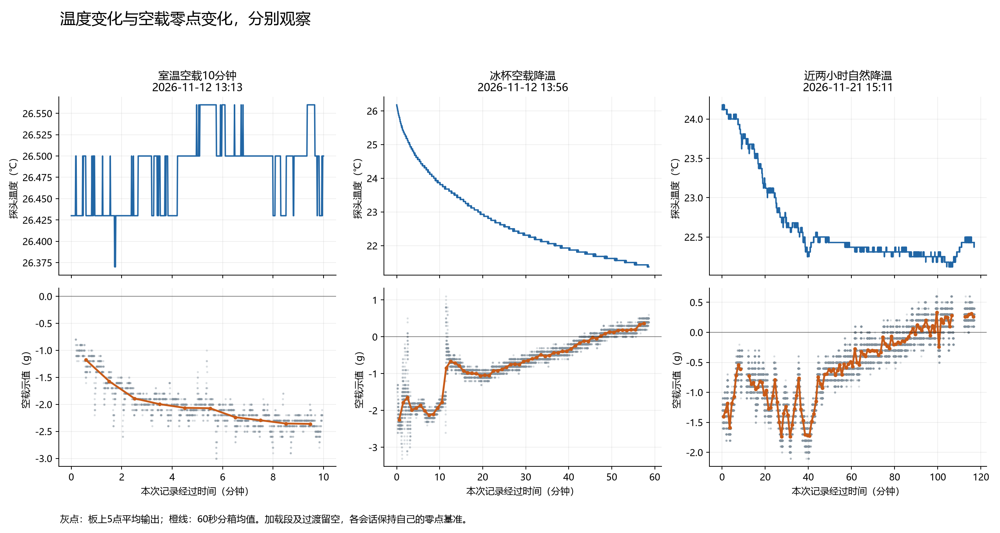
分钟均值的温度相关性
同一会话、同零点段分别计算；只对至少5个分钟箱、均温跨度至少0.5℃的区间列出表观斜率。没有跨日合并拟合。
| 会话 | 分钟箱 | 均温跨度/℃ | 表观斜率/(g/℃) | R² |
|---|
| 2026-11-12_13-56-43_455079 | 58 | 4.407 | -0.5916 | 0.864 |
| 2026-11-21_15-11-23_513038 | 109 | 2.010 | -0.5484 | 0.260 |
温度驱动初测 2026-10-18_DS18B20 0.2分钟 26.68～27.68℃
有效重量 70，有效温度 17，配温重量 68；原始状态 legacy_csv。
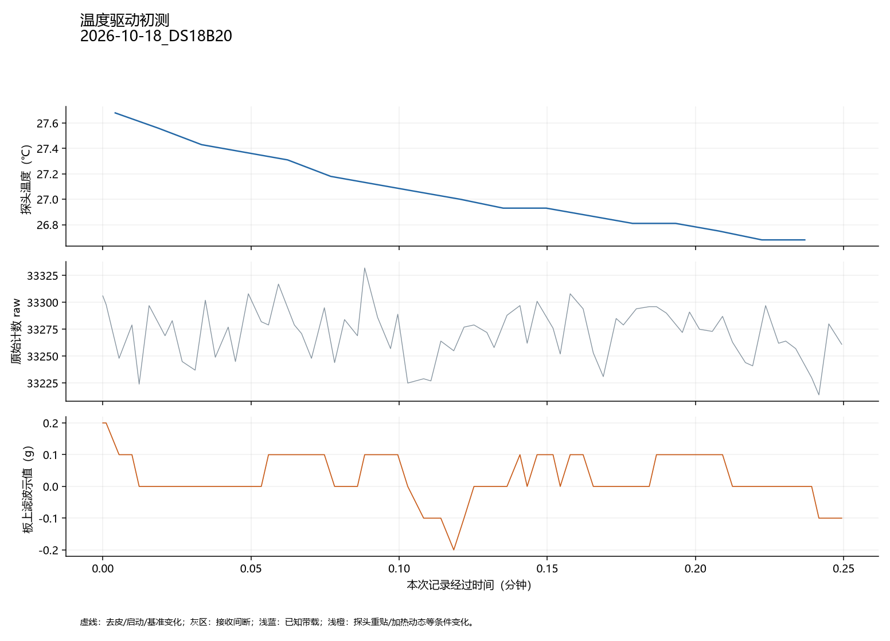
查看原始记录CSV
断线重连检查 2026-11-12_13-11-49_098586 1.0分钟 26.43～26.56℃
用户确认串口曾断开并恢复；仅验证连接，不作为温漂数据
有效重量 275，有效温度 69，配温重量 272；原始状态 completed。
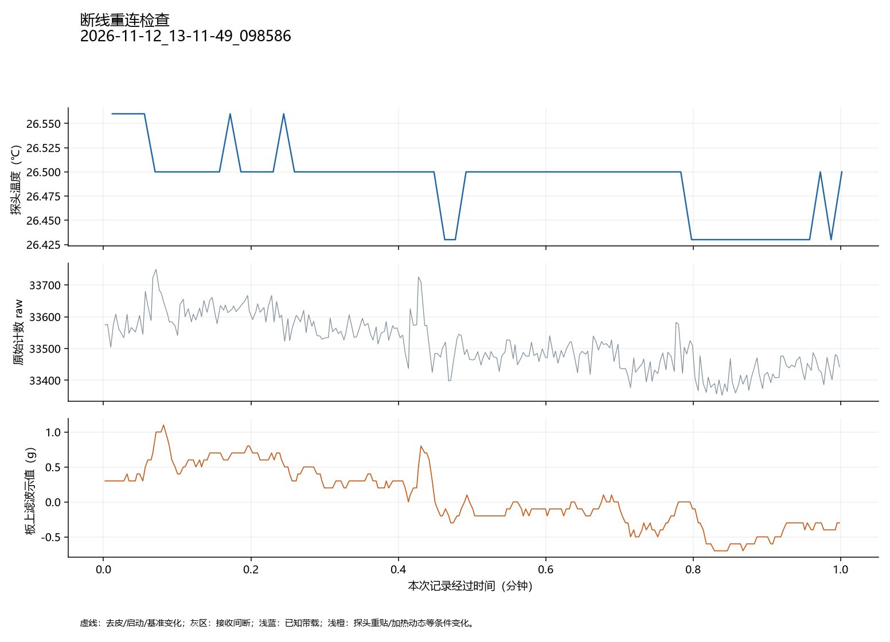
查看原始记录CSV
室温空载10分钟 2026-11-12_13-13-10_084101 10.0分钟 26.37～26.56℃
10分钟基线；不触摸、不复位、不去皮；用于连接和短期漂移评估
有效重量 2,745，有效温度 687，配温重量 2,745；原始状态 completed。
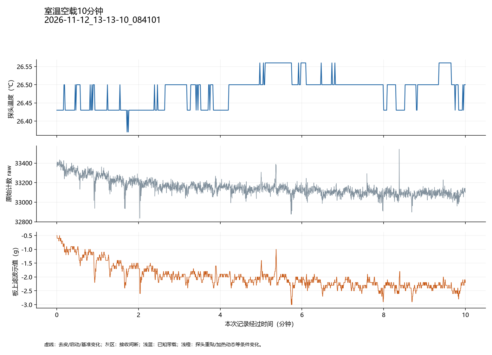
查看原始记录CSV
室温空载接续 2026-11-12_13-23-34_053313 1.4分钟 26.43～26.56℃
接续前一段10分钟检查；不触摸、不复位、不去皮；仍非温漂实验
有效重量 394，有效温度 99，配温重量 393；原始状态 running。
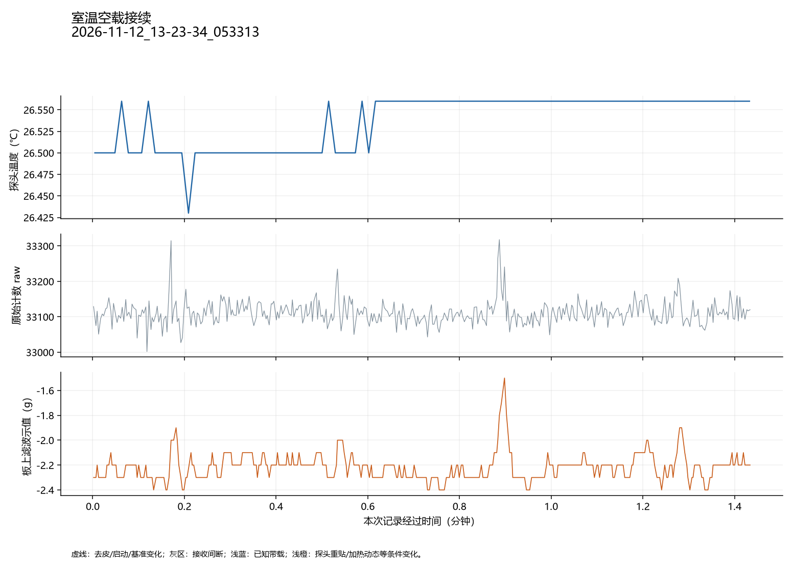
查看原始记录CSV
确认开始前试录 2026-11-12_13-31-07_051218 2.1分钟 26.93～29.68℃
从室温开始连续采集。以操作者事件确认最终摆放、冷源放入和封袋时刻。
有效重量 574，有效温度 144，配温重量 570；原始状态 stopped。
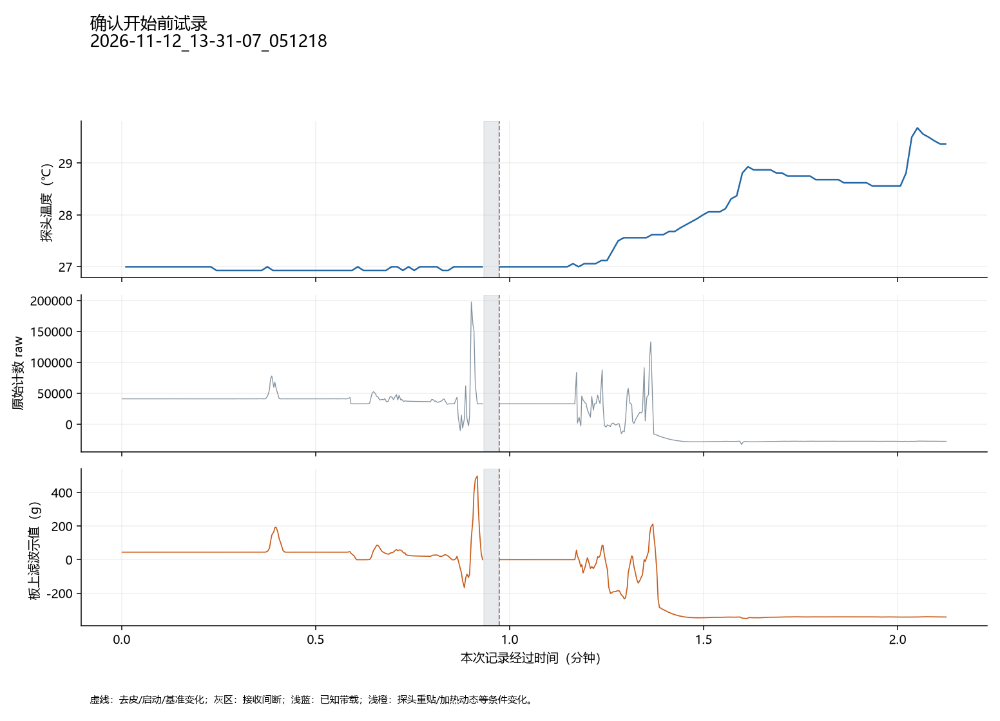
查看原始记录CSV
放冰前室温空载 2026-11-12_13-38-07_988301 8.7分钟 27.06～27.37℃
用户明确确认开始。冰杯放入及碰触时刻由现场确认。
有效重量 2,383，有效温度 596，配温重量 2,380；原始状态 error。
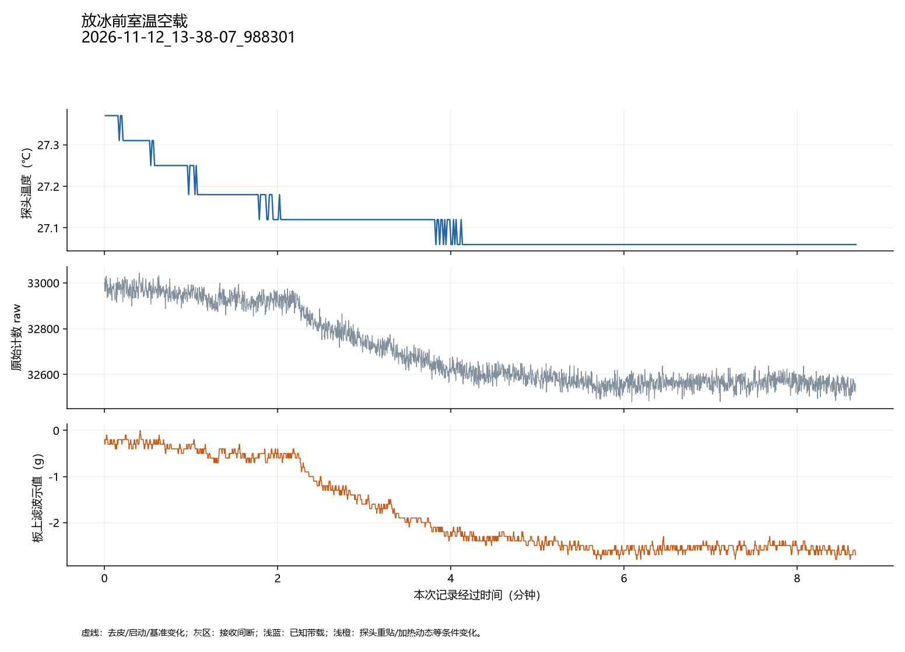
查看原始记录CSV
冰杯空载降温 2026-11-12_13-56-43_455079 58.6分钟 21.37～26.18℃
冰杯约13:56放入。常温会话于13:46:48因状态文件写入错误停止，本会话从冷源放入后续采，两个会话之间有数据缺口。
有效重量 16,106，有效温度 4,021，配温重量 16,080；原始状态 error。
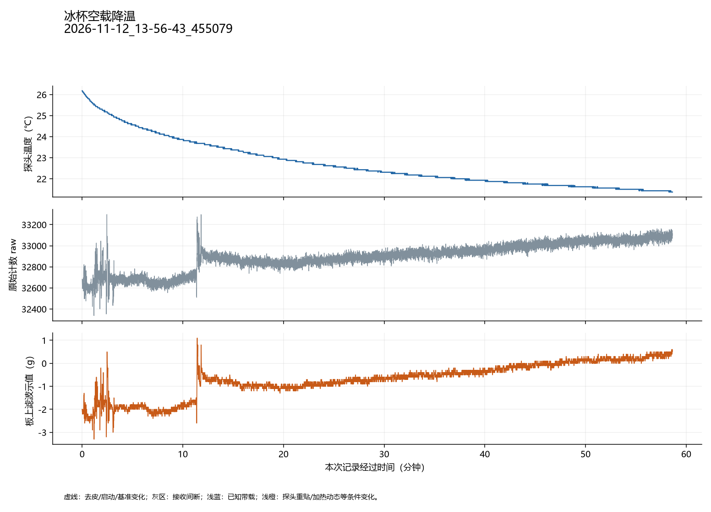
查看原始记录CSV
缺口后低温抽检 2026-11-12_15-54-05_320998 0.3分钟 21.18～21.18℃
前一会话14:55因元数据文件写失败停止；本场只抽检当前状态，不补造缺口
有效重量 92，有效温度 22，配温重量 86；原始状态 completed。
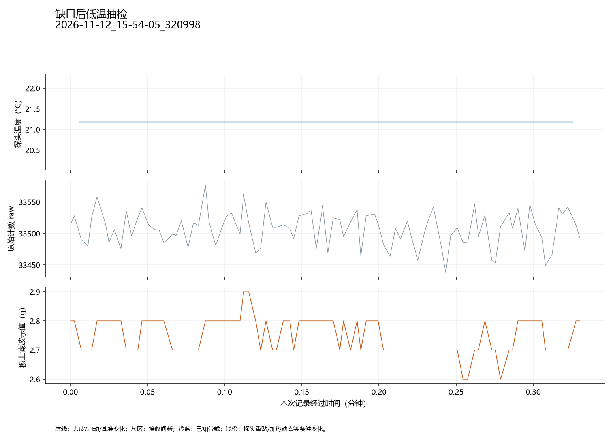
查看原始记录CSV
移杯后部分回温 2026-11-12_15-54-43_101987 5.6分钟 21.12～23.25℃
前一会话14:55异常停止；14:55-15:54数据缺口保留；不复位不去皮不碰秤
有效重量 1,551，有效温度 387，配温重量 1,547；原始状态 running。
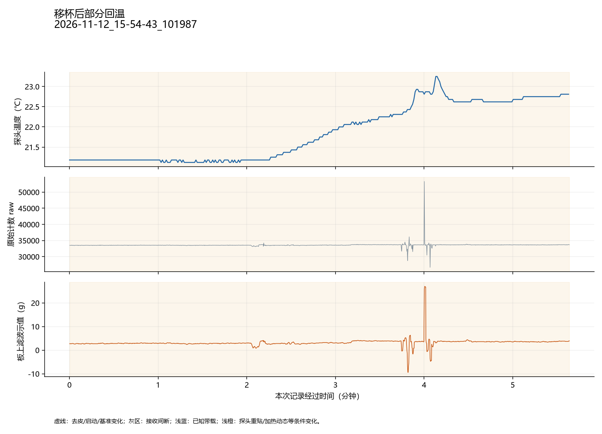
查看原始记录CSV
500g降温与回温 2026-11-13_13-35-29_690685 48.1分钟 21.31～26.81℃
13:35:20收到操作者报告冰袋和砝码已放入。此会话自报告后起录。
有效重量 13,029，有效温度 3,258，配温重量 13,027；原始状态 stopped。
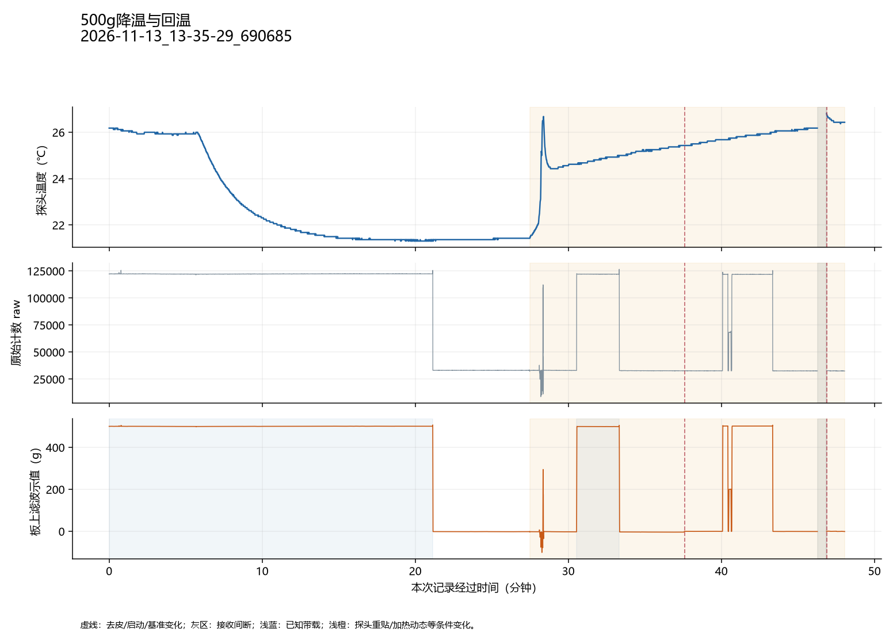
查看原始记录CSV
去皮固件空载检查 2026-11-13_14-24-25_963270 0.9分钟 26.43～26.50℃
有效重量 226，有效温度 57，配温重量 224；原始状态 completed。
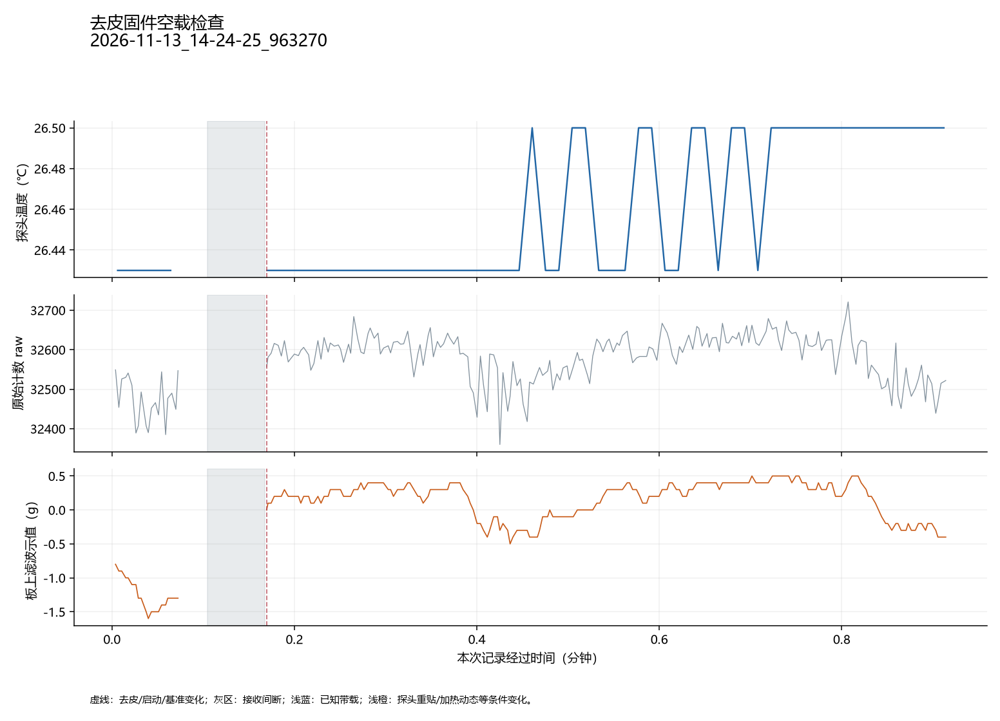
查看原始记录CSV
标定与100g验证 2026-11-13_14-27-10_136669 12.8分钟 26.68～28.06℃
操作者确认起录空载，随后按指令换载，保持装配不动。
有效重量 3,462，有效温度 866，配温重量 3,459；原始状态 stopped。
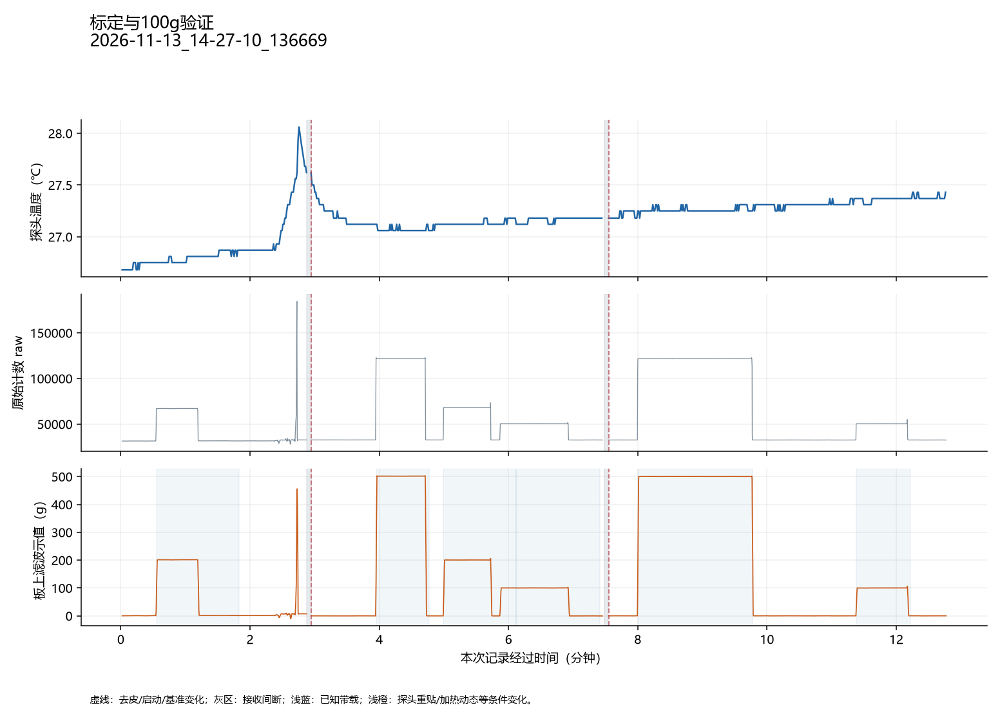
查看原始记录CSV
IIR短时空载验证 2026-11-16_15-19-37_540060 0.5分钟 28.50～28.56℃
有效重量 120，有效温度 31，配温重量 116；原始状态 completed。
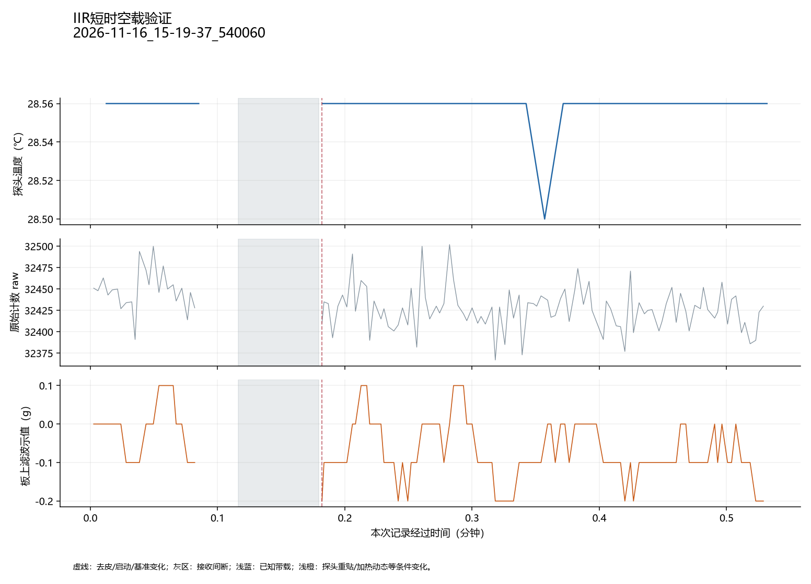
查看原始记录CSV
吹风加热与200g 2026-11-16_15-22-34_441048 19.2分钟 27.50～36.06℃
IIR固件，178.20计数/g。按操作者事件划分加热与载荷。起录先空载。
有效重量 5,260，有效温度 1,313，配温重量 5,250；原始状态 stopped。
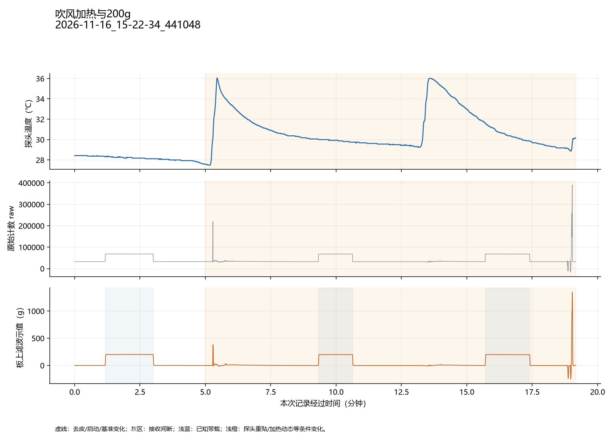
查看原始记录CSV
约21℃载荷复核 2026-11-20_13-25-14_773133 13.2分钟 21.18～21.81℃
开始时载荷未确认；用户报告撕掉秤盘膜，不能据此统一修改旧数据
有效重量 3,607，有效温度 902，配温重量 3,603；原始状态 stopped。
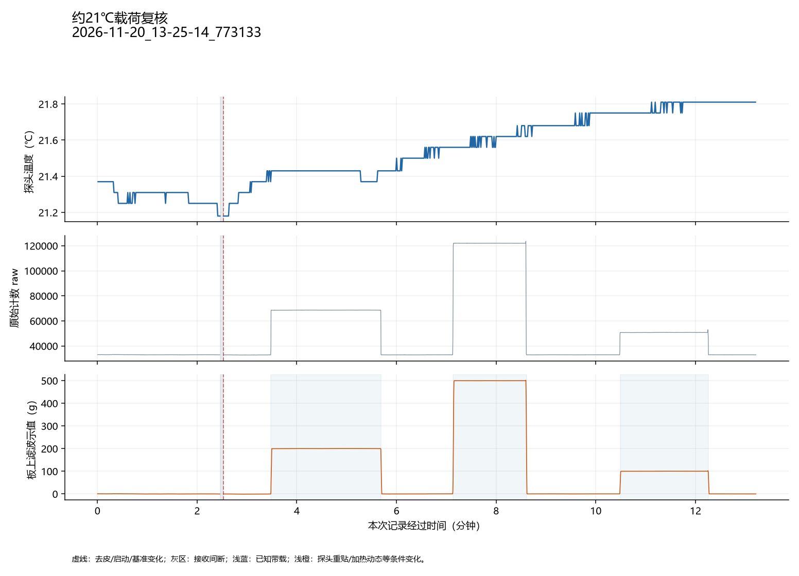
查看原始记录CSV
约25℃载荷复核 2026-11-21_14-55-40_499922 13.3分钟 24.43～25.18℃
与2026-11-20约21.4-21.8度记录比较；当前载荷及期间重启去皮状态待确认；不自动归因温度、不更改固件系数
有效重量 3,653，有效温度 913，配温重量 3,651；原始状态 stopped。
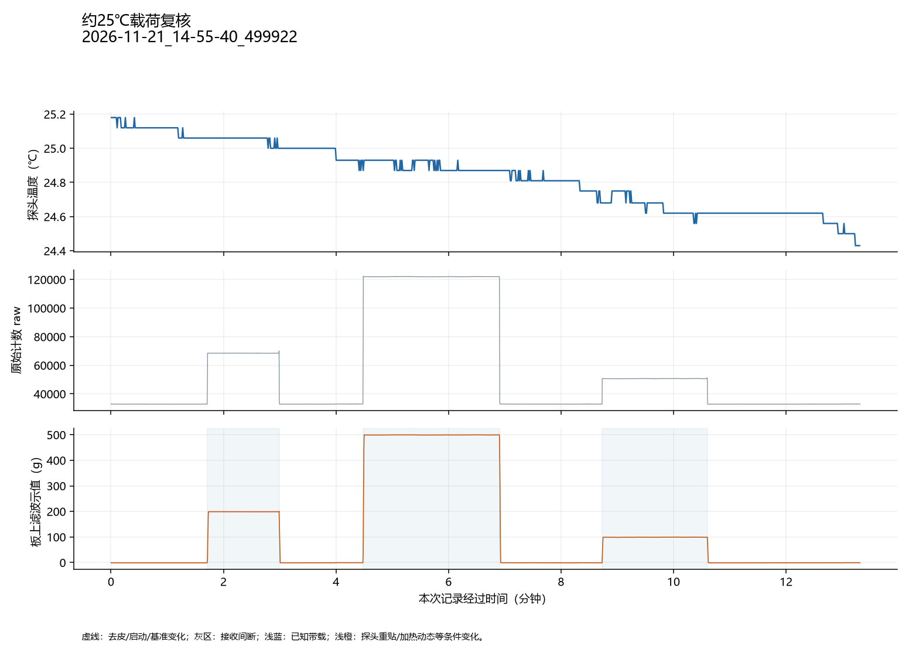
查看原始记录CSV
近两小时自然降温 2026-11-21_15-11-23_513038 116.9分钟 22.12～24.18℃
接续室温会话_独立PowerShell入口因执行策略失败造成停采_未操作MCU_开门时间待确认
有效重量 32,097，有效温度 8,024，配温重量 32,095；原始状态 stopped。
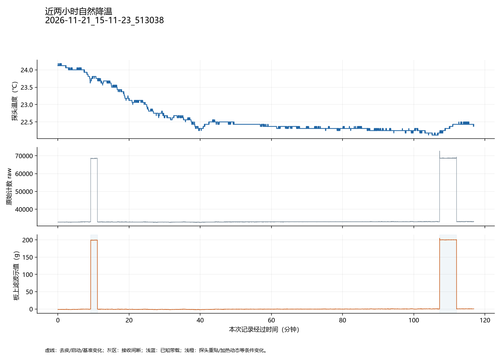
查看原始记录CSV
下载连接检查1 2026-11-21_17-44-25_738006 0.6分钟 22.50～22.56℃
本会话在Keil下载过程中开始，可能包含旧版到新版过渡；实际版本切换以下载校验及启动输出确认。下载重启后自动取零，不接续先前33022基准。CH340本次枚举为COM4，非之前COM13。
有效重量 160，有效温度 40，配温重量 159；原始状态 completed。
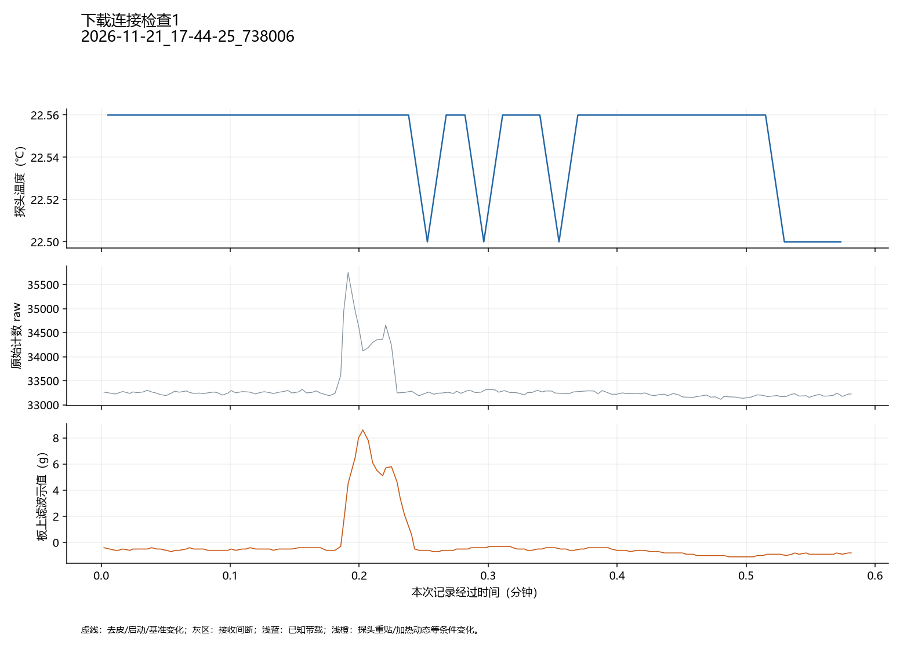
查看原始记录CSV
下载连接检查2 2026-11-21_17-47-03_059749 0.6分钟 22.56～22.62℃
操作者已确认ST-Link接好，核心板通电空载。本会话包含重试下载前后数据，以启动输出及下载校验确认版本切换；不接续历史零点基准。
有效重量 161，有效温度 40，配温重量 159；原始状态 completed。
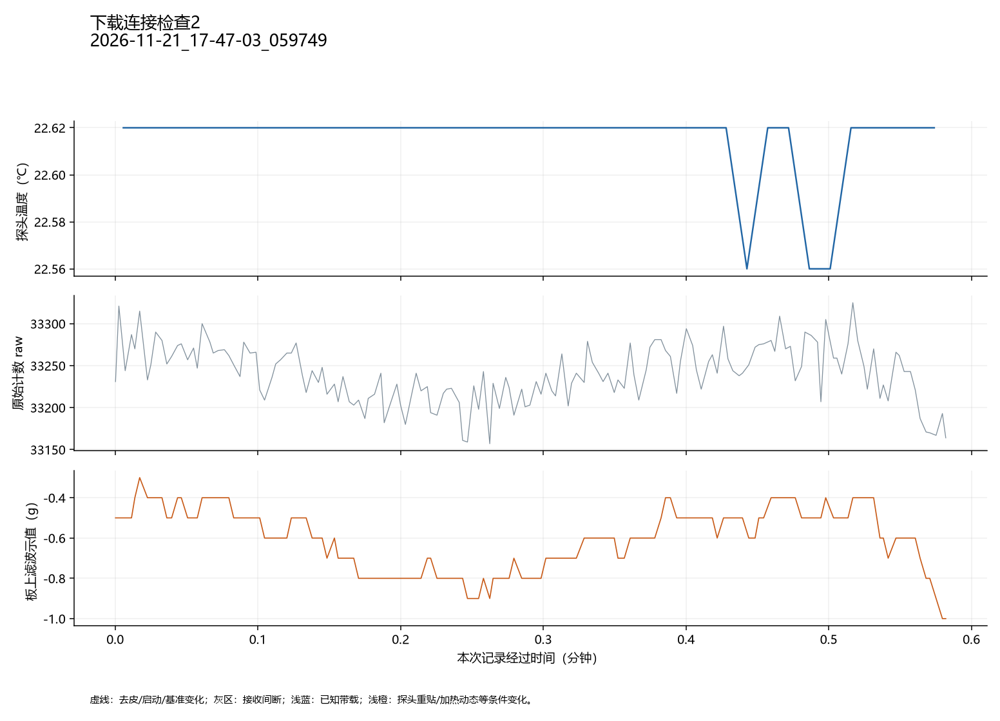
查看原始记录CSV
未另确认的静置观察 2026-11-24_14-21-58_420975 13.2分钟 24.18～24.93℃
按当前对话拟空载；位置供电预热时长待确认；未发送串口指令且未更改固件
有效重量 3,621，有效温度 904，配温重量 3,613；原始状态 error。
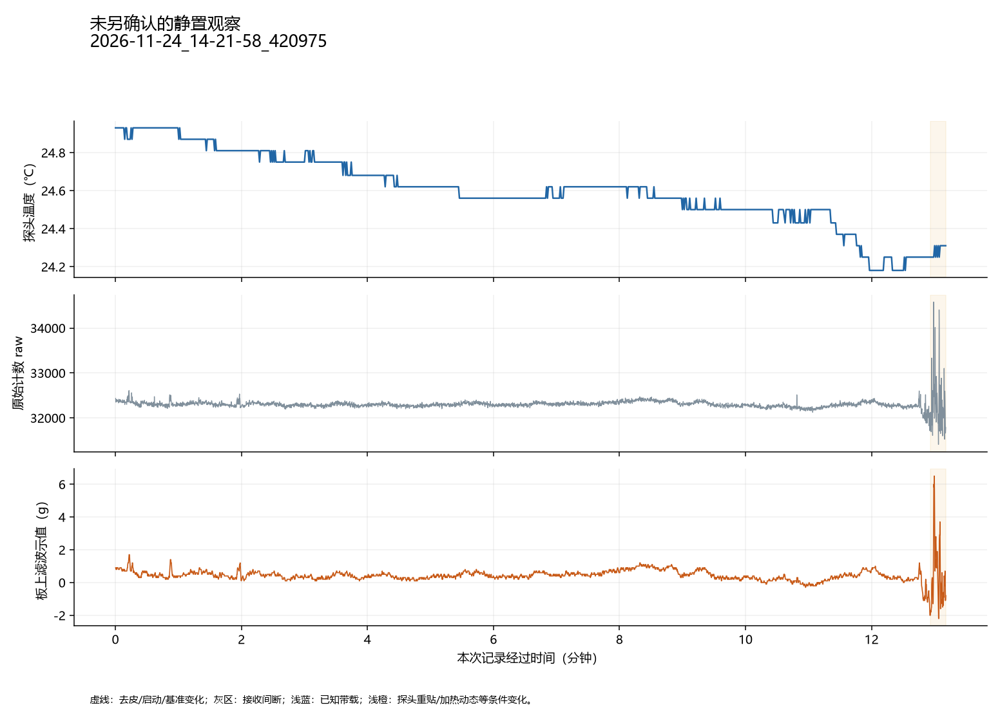
查看原始记录CSV
手动去皮后空载 2026-11-24_18-20-26_028147 3.0分钟 22.93～23.06℃
用户报告开机后等数秒再手动去皮，空载和带载感觉明显稳定。本段按用户确认空载记录；不进行烧录、复位或去皮，启动及去皮的准确时刻未记录。
有效重量 824，有效温度 206，配温重量 820；原始状态 completed。
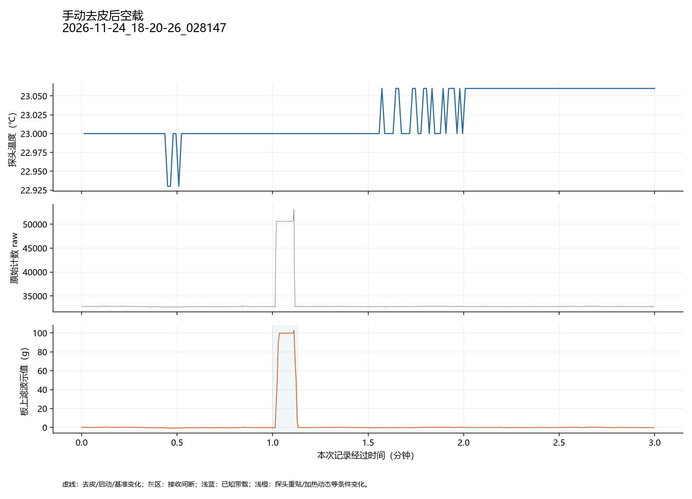
查看原始记录CSV
统计口径与原始资料
温度与重量是交错输出，用此前有效温度向前配对，年龄上限2秒；不使用未来温度，也不跨错误状态补值。断档不插值，去皮/启动拆段，未知载荷不假定为空载。每分钟统计至少180条有效配温重量、覆盖45秒。重复相邻采样不是独立实验重复。
不同固件的换算系数分别记录，图中板上滤波值保持原样。装配分组保留，不统一扣除估计膜重。两段旧元数据的“running”状态保持原样，本次按文件快照分析。